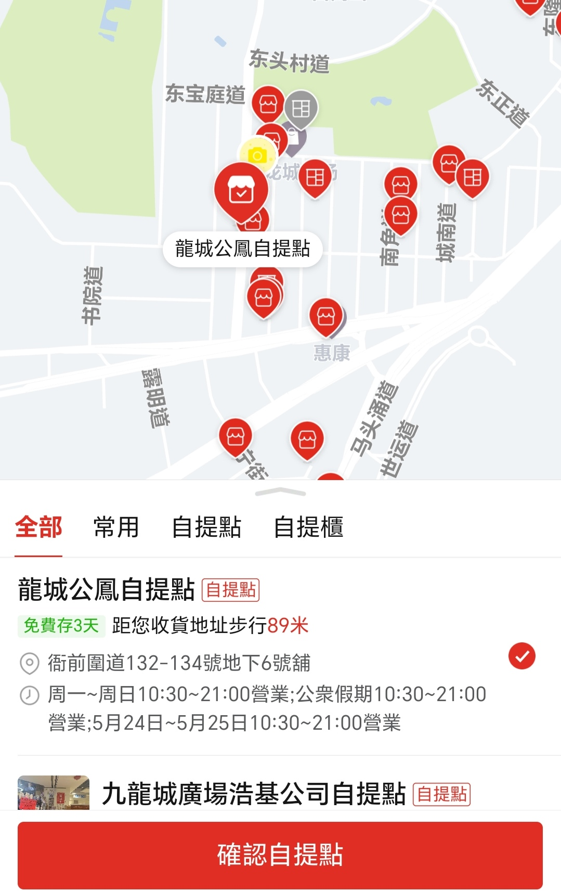

內地電商浪潮南下，香港零售如何重塑
從「購物天堂」到十字路口——跨境供應鏈如何改寫香港零售業的命運
不同的軌跡——香港零售業的下滑與內地電商平台的崛起
曾經，香港是以國際化優質商品而聞名的亞洲購物天堂，從家居物品、電子產品到食品藥品，這裡是消費者購物的不二選擇。但自疫情以來，香港零售額的增長被打斷，零售業正經歷變革，熙熙攘攘的街邊商業和豪華奢侈的商場變少，零售數據相比疫情前「一落千丈」。
與此同時，口岸邊境另一邊的內地，電商平台利用疫情時團購、外賣配送等契機，逐步發展壯大、完善平台科技與用戶體驗，徹底打破了傳統購物模式的地域限制。現如今，內地電商不再是香港零售業遙遠的競爭對手，已經深入香港的每一片城區、每一條街道，融入了香港市民的生活之中，將各類數碼產品、生活用品甚至新鮮食物送到用戶的家門口。
香港零售的下滑之路
數據直觀生動地描繪出香港零售業的掙扎處境。根據香港政府統計處的數據，香港零售業總銷貨額在疫情後的2023年恢復到4066.49億港元，但到了2024年底，這個數字降低到了3768.47億港元，同比下降7.3%。2025年的數據雖略有增長，但也僅有1%，年零售業總銷貨額為3804.45億港元。若考慮匯率、通貨膨脹等其他因素，這一數字也許只是原地踏步而非進步。
商鋪租金的下行同樣也能反映出本地零售業的調整。根據仲量联行（JLL）2025年第四季亚太区物业市场报告，受零售销售增长乏力和就业前景严峻的影响，预计商业街店铺租金将下降 0-5%，优质购物中心租金预计将进一步下降 5-10%。
內地電商的南下「攻港」
在香港零售業經歷下滑的同時，另一個生態系統卻在快速擴展。2024年10月1日，淘寶公佈了香港地區99元包郵的政策。而拼多多則更加誇張，幾乎所有商品都免除運費，無論是數公斤重的商品還是僅價值一塊錢的小物件。京東也不甘示弱，他們表示如果商品有更低的價格他們都會匹配，「買貴就賠」。
這一切都不是欺騙消費者的行為，而是經過計算後的市場擴張。從前高昂且不便利的運輸與提貨這一障礙不再存在。香港消費者的消費行為變化果斷且迅速，根據摩根大通2025年12月發佈的報告，內地平台在香港月活躍用戶中的市場份額不斷增長，其中拼多多最為突出，其2025年市場份額從1月的12%激增到了10月的28%。
這份報告指出了其中也許是至關重要的一點：價格。同款雜貨商品，拼多多平台上的價格比本地商超供應鏈便宜42%，而同款家用电器的價格差異更是能達到56%。
數據來源：now財經（2025年12月2日）【捱打難復甦】摩通:內地電商兩招KO港必需品銷售
港大经管学院2025年9月引用Statrys的一项调查也證明了這一轉變：75%的香港網購用戶說自己曾在內地電商平台上購物。香港科技探索（HKTV）副主席王維基在「HKTVmall Vision Day 2025」中也提到，香港市民的消費能力並沒有減少，只是消費者的消費習慣發生了顯著變化，從實體店轉向了網購和海外消費，導致實體零售業生意減少。
「免郵區」的生活 —— 一名內地學生的視角
數據反映出的整體趨勢，本質上是由數以萬計的消費者行為組成的。這場香港零售業轉變所帶來的影響，在來港就讀的內地學生這一消費者群體中更容易體現。他們對內地商品和網購都很熟悉，更容易接受使用內地電商平台。吳思澤便是其中的一員。
吳思澤是一名目前在香港讀大學本科的內地生，對他來說，內地電商平台在香港的擴張發展從根本上改變了他的日常生活。他回憶到，四年前剛來香港的時候網購還不發達，直到兩年前都幾乎很少網購東西送來香港：「一個問題是運費基本都很貴，有的甚至超過了商品本身的價格；另一個是運送花的時間也基本都很長，取貨也不方便。」
然而，「包郵到港」改變了這一切，尤其是拼多多的一件也包郵政策。現在，吳思澤已經是拼多多的忠實用戶。無論是幾塊錢的手機殼，還是很重的整箱礦泉水，他都可以網購然後在離家僅100米的自提點取貨。「現在都感覺不到是在跨境購物，跟在内地網購沒什麼區別了。」他說。

吳思澤家附近有許多可供取件的自提點，其中最近的一個僅距離89米 圖片來源：拼多多手機APP吳思澤會在拼多多上買各種東西，他說，新鮮水果等容易壞的東西還是會在香港超市裡買，但是雜貨或者不容易壞的東西基本都是網購，包括礦泉水、方便麵、垃圾袋、紙巾等。
促使他轉向內地電商平台最直接的驅動力，毫無疑問是價格差距。內地商品在原本就更便宜的同時，透過包郵到港，徹底擁有了價格優勢。吳思澤說，在香港買一瓶礦泉水要七八塊錢，但在拼多多上一次買一箱，免郵費送到自提點只要二三十塊錢，一個學期下來能省不少錢。他去年網購的一台洗衣機也為他省了不少錢。
除了價格之外，網購也對他心理層面上有影響。「畢竟第一次一個人在離家這麼遠的地方生活，有時候還是有點不適應。但是當我快速又便宜地用到以前在家裡用過的牙膏、洗衣液的時候，這種和家裡的距離感就沒有了。」吳思澤說。
這樣的經歷並不獨屬於吳思澤，相信許多來港的內地人都會在京東、淘寶、拼多多等平台上網購自己熟悉的東西，三四天後就能在住所附近的自提點收到。來港內地學生作為在數字系統中長大的一代，對他們來說，內地電商平台進入香港完全不是生活習慣的破壞，而是期盼已久的事情終於得到實現。他們的網購經歷可以作為香港居民的參考。體驗到便宜且便捷的網購服務後，大家舊有的本地實體購物習慣很容易會得到改變。
但是，這種改變不能簡單地理解為內地電商侵佔了本地零售市場、香港零售業衰落是因為內地電商平台的進入。如果香港能夠利用得當內地電商平台，利用好這一套跨境供應鏈，也許能夠幫助零售業以新的形勢從疫情中復甦，甚至發展得更好。
跨境供應鏈的雙向影響——救命稻草還是壓垮駱駝的最後一根稻草？
自提點在香港的興起
「包郵到港」帶來的最明顯、最迅速的影響，莫過於自提點數量的增長。當數以萬計的包裹每天從內地來到香港時，它們需要一個能夠儲存並派發給用戶的終點。這一需求導致許多便利店、街市空置鋪位變成微型物流樞紐。
對於一個街邊小店的店主來說，將店鋪轉型做兼營京東、菜鳥這類的官方自提點，能夠給他們帶來一筆可觀的補貼收入。根據香港01的瞭解計算，一家自提點每天大約能處理100件包裹，電商平台的官方集運服務佣金為一件包裹首公斤拆佣2.5元，其後每半公斤多收0.5元，平均每件貨自提點可收佣3元。如果自提點每日收200件貨，即每日賺600元，每月收入一至兩萬元。這對於一家利潤微薄的零售店來說，可能就是續租與關店的區別。而透過做兼營自提點派發包裹，也能夠獲得額外的客流量，有機會讓前來取貨的顧客購買店內其他商品，更加幫助到店鋪的經濟。
當然，這種模式並非完美。當全港自提點數量激增，兼營自提點所能獲得的收益在很大程度上取決於不穩定的包裹數量，以及平台提供的包裹佣金單價。此外，容量限制這一問題也常常被忽視，一家自提點無法容納過多的包裹，而節假日或平台促銷時往往包裹數量飆升，導致包裹堆積如山，自提點無法承受，包裹溢出到自提點店鋪外的過道上，導致受到社區中其他不使用自提點的居民的反感甚至抵制。
香港品牌入駐內地電商平台
如果說經營自提點是對內地電商平台擴張市場的一種「防禦」方案，那麼主動利用這個平台，北上銷售商品，則是另一種「進攻」方案。這些平台在爭奪香港消費者的同時，也為本地商家打開了通往內地14億潛在客戶的大門。
淘寶香港站、天貓國際、京東全球購等平台均向香港企業開放入駐通道。數十年以來，香港品牌在內地都享有較好的聲譽，香港商品象徵著品質與國際化，這也正是以前大量內地消費者選擇來港消費的原因。如今，電商平台提供了一個更加直接、可發展的渠道，讓香港能繼續利用聲譽優勢獲得實際收益。
香港品牌入駐內地電商平台，需要學習、了解內地消費者的消費偏好，管理商品從香港到內地的運輸鏈，並學習如何在成熟的內地電商環境下擁有競爭力。透過網上銷售，香港品牌可以無需承擔在內地開拓實體零售店的成本，就獲得全國範圍內的消費者，增加潛在收益。一旦轉型成功，成為主動的數字零售商，香港的零售企業就能獲得本地市場原本無法提供的需求規模。
總的來說，這一套數字化供應鏈可能會威脅到街邊傳統店鋪的生存，同時也可能幫助一些人靈活就業、降低成本、接觸新客戶或開闢新的收入方式。相信在未來，內地電商與香港零售還有更多的融合合作空間，例如香港本地零售店從內地網購原材料並使用，降低原本高昂的成本。從和內地電商競爭，轉變為利用它，專注於提供即時取貨、親身體驗等消費者體驗和本地化服務，而這正是內地電商平台難以替代的價值環節。
內地電商的投入下，香港未來的新常態
近三年來，內地電商在香港的發展和消費者行為的變化都不會是暫時的，香港零售環境的改變將是長期的。各平台的政策投入，各種基礎設施的建設，以及消費者的期望共同構成了香港零售未來的新常態。
從免郵政策開始的網購行為固化
作為最開始的促銷手段，免郵政策如今已發展為香港市場的固定特徵。淘寶天貓香港事業部負責人沛汐在2025年10月介紹，由於在港試行零門檻一件包郵後消費者反應熱烈，訂單量增長可觀，淘寶香港站決定將長期實行免郵政策，幾乎所有輕小件商品都可一件包郵送至自提點，預計涉及商品數量增至10億，補貼金額超過10億元人民幣。這項舉措的信號很明顯，「包郵到港」將不會是臨時的促銷手段，而是會鞏固香港市場的長期投資。
其他平台同樣如此。拼多多在2024年11月就已開始實施香港包郵政策，推行「一件也包郵」，不論商品單價與重量，持續至今，獲得了大量高頻次、小額碎片化的訂單。京東則在主打送貨上門服務策略的同時，進一步擴大在港物流網絡，將沙田區的自提點從約40個增加至超過70個，其他城區也陸續增設。據京東港澳台業務負責人披露，2025年3月至10月，京東港澳用戶規模較2024年7月至2025年2月增長了120%。
運費之外，內地電商的網購文化對香港同樣影響深遠。各平台一年一度的購物節，如「618」、「雙11」等，也正在深入香港消費者的生活。2025年「雙11」活動期間，淘寶香港站平台整體流量按年錄得雙位數增長，用戶規模增長22%。京東全面佈局香港後，2026年的「618」作為首次大型購物節，京東承諾「將以最大的誠意，為香港市民帶來史無前例的優惠」。
從線上銷售到佈局線下的進一步發展
不只是線上營運政策的支持，線下實體資產的佈局，進一步表明內地電商平台在港發展的決心。
2025年8月，京東收購佳寶超市，擁有了約100家分店，還計劃在今年6月18日在灣仔核心區開設香港首家京東MALL。阿里巴巴旗下的淘寶也同樣致力於香港業務實體化，PapaHome淘寶家具實體店繼2025年2月在尖沙咀中港城開設首間實體店後，正計劃進駐銅鑼灣Fashion Walk，並將合作商戶數目由逾100間增至逾1000間，商品種類由約1萬款增至逾10萬款。
實體店的擴張進一步改變了本地零售競爭，內地電商不僅在價格上與本地競爭，也同時在提升本地化服務。香港傳統零售商所要面對的，將是線上線下融合的全渠道零售系統。
展望未來——香港零售業適應還是淘汰？
香港零售的未來，並非自內地電商平台南下開始就被寫定，而是取決於多個因素的互相作用下未來的發展。
首先便是政策支持，香港政府正在積極幫助企業轉型。2025年12月31日，香港數字政策辦公室宣布與香港數碼港管理有限公司合作推出「數碼企業身份」沙盒計劃，旨在協助及推動香港企業加快數字化轉型，進一步優化香港企業的營商環境。
香港發展品牌、升級轉型及拓展內銷市場的專項基金（「BUD專項基金」）用於鼓勵香港非上市企業透過發展品牌、升級轉型和拓展營銷。基金上線以來不斷優化，2023年6月推出「申請易」，加快審批涉及特定措施的申請；2024年7月推出「電商易」，鼓勵企業靈活運用資助推行電子商貿項目；2025年《施政報告》宣布擴大基金的資助地域範圍20%至覆蓋多八個經濟體；2026至27年度《財政預算案》宣布，將「申請易」每宗申請的資助上限由10萬港元提升50%至15萬港元。2026年4月1日，香港商務及經濟發展局局長丘應樺在立法會會議上介紹說，截至2026年2月底，「BUD專項基金」共接獲超過32000宗申請。2025年接獲約5350宗申請，較2019年增加超過210%，反映業界對「BUD專項基金」的需求一直保持殷切。
在政策的幫助下，本地零售業需要進行調整。德勤中國預測，2026年香港零售銷售有望增長近8%至約4,100億港元，其中，珠寶首飾、鐘錶及名貴禮物有望增長19%，服裝鞋履增長16%，藥物及化妝品增長11%，這間接表明正品保障、服務品質及實體店體驗仍有線上無法取代的優勢。而日用雜貨、電子產品等商品化程度高且價格透明的品類，則會受到較大衝擊。
正如王維基所說，香港零售的處境猶如在沙漠中尋找綠洲，「如果現時咩唔做，就好容易在沙漠中渴死」。在香港消費者對內地品牌的接受度越來越高的情況下，若香港傳統百貨公司仍保持一成不變的模式運行，將面臨被淘汰的結局。淘寶、京東及拼多多三大內地電商的攻港，既能重塑香港消費者的消費模式，也能推動本地零售業升級。香港在更了解本地消費者的同時，可以借鑑內地電商平台的經驗，並與內地商家合作，保持競爭優勢。
「如果現時咩都唔做，就好容易在沙漠中渴死。」 —— 王維基，HKTV副主席
結語：十字路口的香港零售
內地電商平台的南下，對於香港零售業來說，既是無法避免的挑戰，也是前所未有的機遇。
挑戰在於，在香港本地人力及租金成本高昂，內地電商平台巨大的價格優勢難以改變的情況下，日用品、快速消費品的服務體驗與品質往往顯得不再重要。這場價格戰中，本地零售很難與已有多年數據分析、用戶行為追蹤、個人化推薦經驗的內地電商競爭。
機遇在於，香港政府也在為本地零售的轉型與數位化提供積極幫助。跨境供應鏈為香港帶來了新的資源與銷售渠道。無論是透過自提點獲取包裹派發佣金，還是將香港品牌推廣至內地14億消費者的市場，香港零售都有機會從被動轉為主動。
香港零售業的未來，不應是如何抵制內地電商平台與本地的融合。香港需在「一國兩制」的制度下，利用好自身平台，做到既有國際化大都市消費體驗，又能無縫連接內地供應鏈。而香港零售企業，則要敢於求變、善於借力，在這場融合中發掘新的市場。